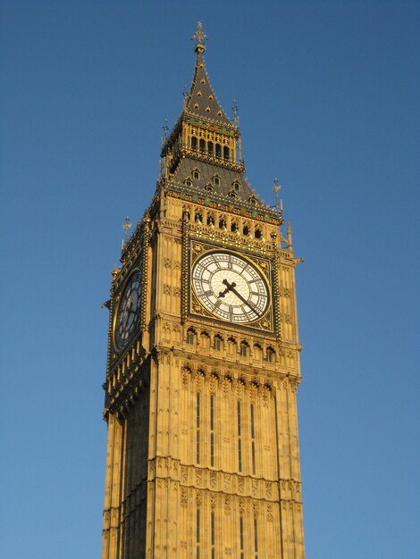
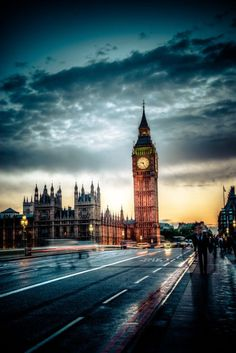
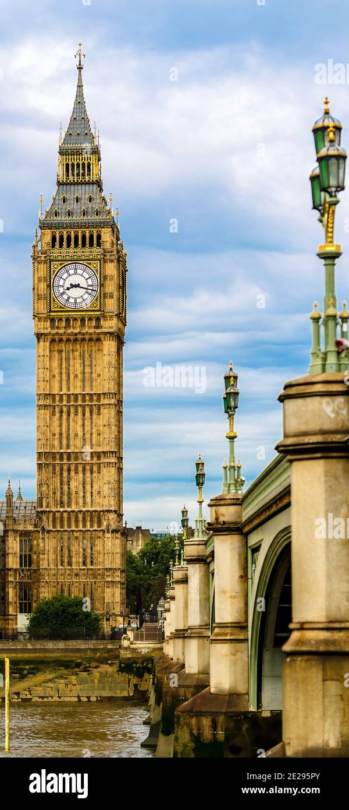

Il mio viaggio a Londra



Le mie spese
| Numero |
Descrizione |
Costo |
| 1 |
Biglietto Aereo |
120€ |
| 1 |
Biglietto Aereo |
120€ |
| 1 |
Biglietto Aereo |
120€ |
| Totale |
|
360€ |
Cose da fare
- Visitare la tower of London ✗
- Visitare greenwich ✓
- Ascoltare un artista di strada a Convent Garden ✗
- Mangiare il tipico fish and chips inglese ✓
Info utili
- Numeri utili di emergenza
- 999 - Emergenza
- 101 - Numero polizia
- 111 - Numero assistenza medica
-
Hotel
- Nome Hotel: Buckingham Palace
- indirizzo Hotel: Westminster, London SW1A 1AA, Regno Unito
- Aereo
- Volo di Andata: YI234X, ore 9:30 da Milano Malpensa
- Volo di ritorno: YI2367X, ORE 18:30 da London Heathrow
Le foto